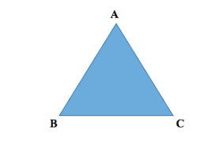

This application will help you know whether a triangle is isosceles, equilateral, scalene or NOT a triangle at all.
Now let us input some values and find out the different types of triangles. Try it below. Have fun and click find out for your results.
